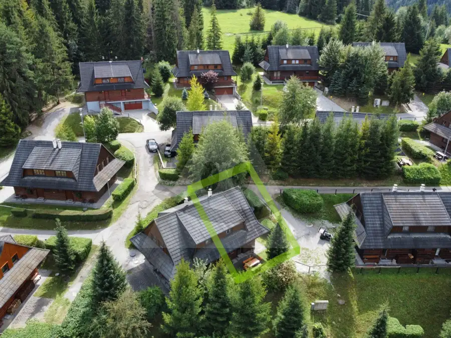
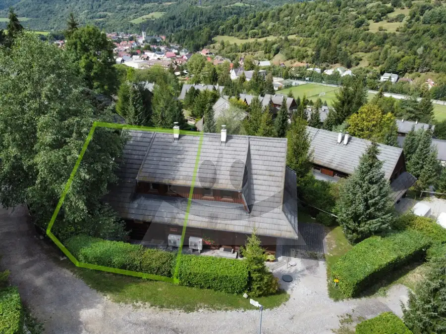
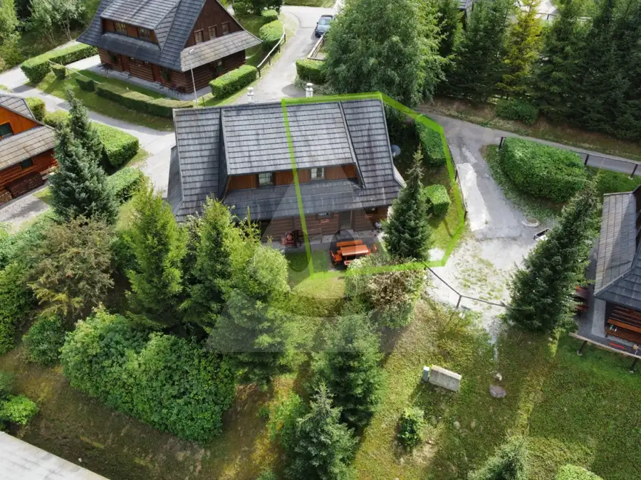
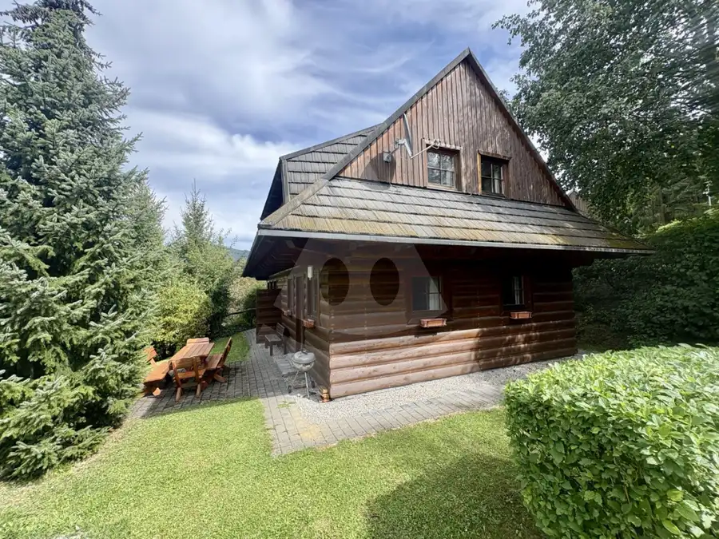
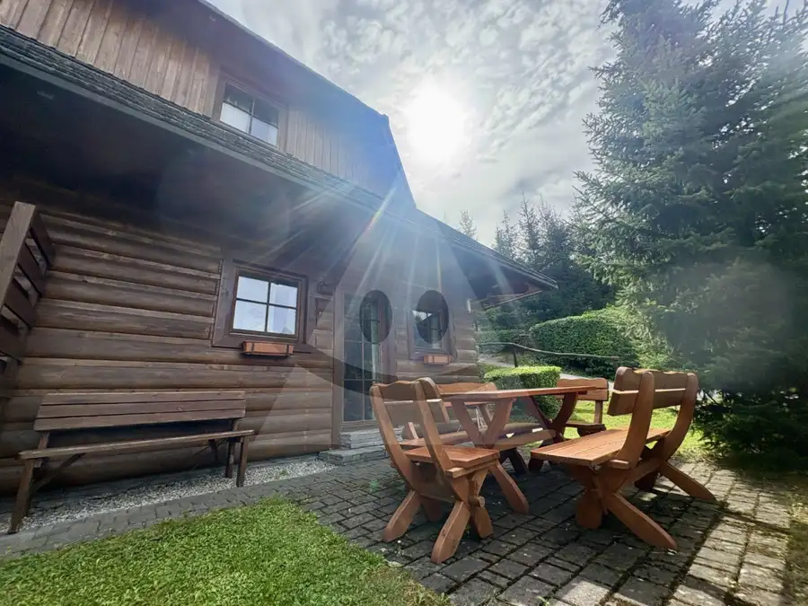
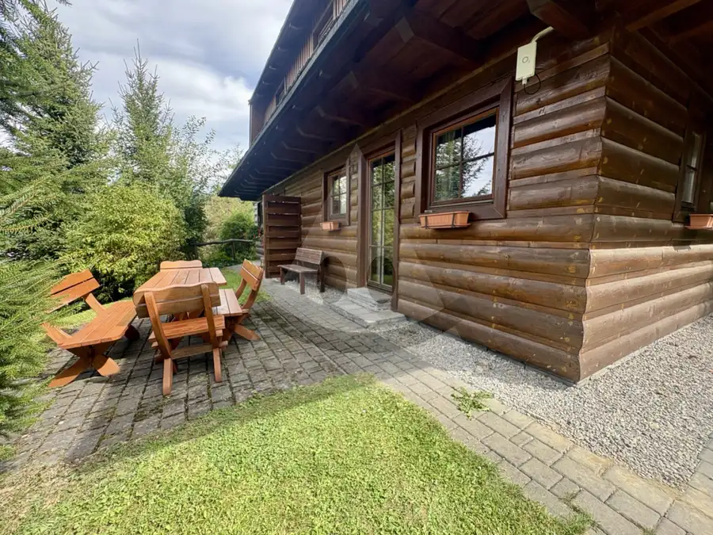
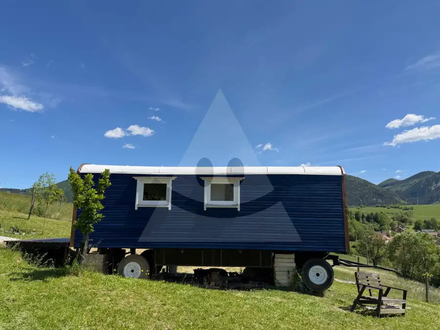
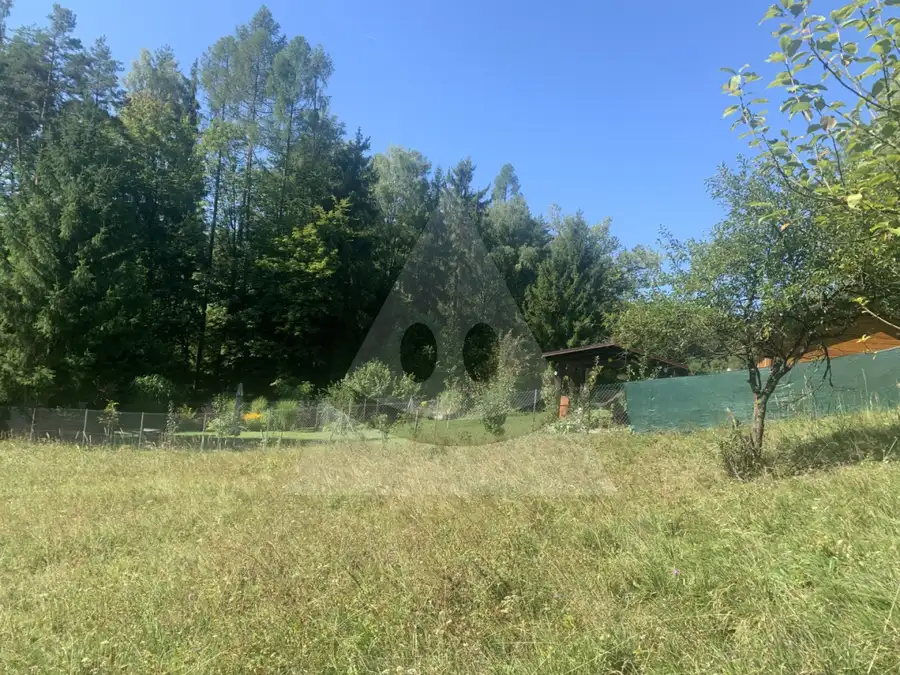
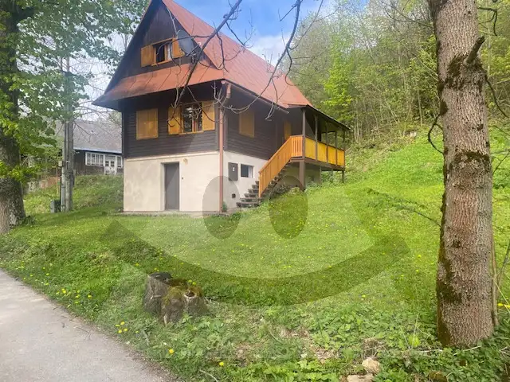

Rekreačná drevenica Terchová - Vŕšky / 65 m2/
Terchová






- Plocha65 m²
- StavPôvodný stav
- VlastníctvoFiremné
O nehnuteľnosti
Reality Alpia ponúkajú na predaj kompletne zariadenú rekreačnú drevenicu v jednej z najvyhľadávanejších lokalít Malej Fatry - Terchová. Táto obec je známa krásnou prírodou, čistým vzduchom, blízkym lyžiarskym strediskom vo Vrátnej a množstvom turistických a cyklistických trás.Na predaj je polovica rekreačnej drevenice vo vyhľadávanom rezorte Drevenice Terchová https://www.dreveniceterchova.sk/Dispozičné riešenie:Prízemie: vstupná chodba, WC, technická miestnosť, priestranná obývacia izba s krbom prepojená s jedálenským a kuchynským kútom.Poschodie:dve samostatné spálne s úložným priestorom, kúpeľňa so sprchovým kútom a WC.Chata je pripravená na okamžité využívanie bez potreby ďalších investícií. Súčasťou vybavenia je aj krb, ktorý vytvára príjemnú atmosféru. Priamo z obývacej izby je výstup k vonkajšiemu posedeniu, ktoré je ideálne na grilovanie. Pre zvýšenie komfortu majiteľ osadil tepelné čerpadlo.Je možné ju využívať pre vlastnú potrebu, ale aj ako investičnú nehnuteľnosť.K nehnuteľnosti patrí pozemok priamo pod budovou drevenice, ostatný pozemok je vo vlastníctve rezortu, pričom zabezpečuje aj jeho kompletnú letnú aj zimnú údržbu.Lokalita ponúka pokojné prostredie a je ideálnou voľbou pre celoročný oddych, aktívny pobyt v prírode a zároveň ponúka relax v podobe wellness centra, ktoré je k dispozícii priamo v rezorte za výhodnejšiu cenu pre majiteľov dreveníc.Bonusom je výborná reštaurácia s pivovarom Vŕšky, detské ihriská a krásny upravený areál.Ak hľadáte nehnuteľnosť, ktorá spája výbornú polohu v krásnom prostredí a celoročné využitie v atraktívnej lokalite, práve ste našli.Viac informácií Vám radi poskytneme na tel. čísle 0905 358 191 alebo na e-maile akantis.realityalpia@gmail.com
Parametre
- Druh
- Chalupa, rekreačný domček
- Dátum zverejnenia
- 11. 09. 2026
- Energetický certifikát budovy
- nie je
- Plocha pozemku
- 0 m²
- Počet izieb / miestností
- 3
- Počet nadzemných podlaží
- 2
- Stav nehnuteľnosti
- Pôvodný stav
- Terén pozemku
- Mierne svahovitý
- Typ
- Predaj
- Typ konštrukcie
- Drevená
- Vlastníctvo
- Firemné
- Vybavenie
- Terasa
- Vykurovanie
- Iné
- Úžitková plocha
- 65 m²
Kde to je


Mohlo by Vás zaujímať

DomNové Cena na vyžádáníMaringotka s pozemkom na prenájom / 1096 m2 / Poluvsie - Rajecké Teplice Rajecké Teplice 1096 m²
PozemokNové 43 500 €Rekreačný pozemok pre mobilný dom, chatu / 847 m2/ Žilina - Závodie Žilina 847 m²
Chalupa, rekreačný domčekNové Cena na vyžádáníRekreačná chata / 704 m2 / Terchová Terchová 704 m²